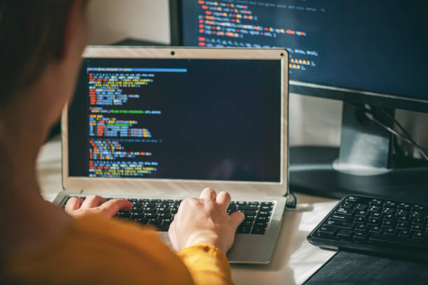
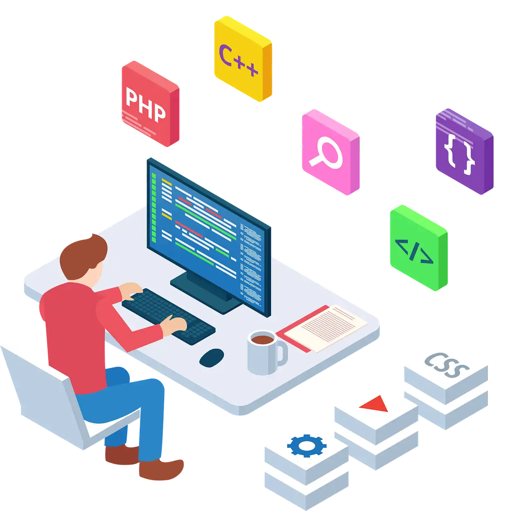

Minha jornada na programação
Compartilhando meu aprendizado em TI
Por que escolhi a área de TI

A programação não escolhe quem é bom. Ela escolhe quem persiste. Quem curte o
processo.
Quem se encanta com o “como”.E se ela te pegou… não solta. Porque quando você entende que
pode criar qualquer coisa — o mundo vira seu playground
Muitas pessoas pensam que para aprender programação é preciso ter um talento especial ou ser um
“gênio da tecnologia”. Na prática, não é assim. O que realmente faz diferença é a dedicação e a
vontade de continuar aprendendo, mesmo quando as coisas parecem difíceis. Cada erro no código é
uma oportunidade de entender melhor como tudo funciona
Outro ponto importante é aprender a gostar do processo. Programar envolve tentativa e erro,
pesquisa, paciência e muita prática. Às vezes um problema pode levar horas para ser resolvido,
mas quando finalmente tudo funciona, a sensação é muito gratificante. É nesse momento que muitos
desenvolvedores percebem que escolheram o caminho certo.
Meu primeiro código

eu e meus amigos ficamos muito animados. Ver o GIF aparecendo na tela pela primeira vez foi algo
simples, mas ao mesmo tempo muito empolgante para nós. Foi naquele momento que percebi que
programar podia ser algo muito interessante e divertido
Jornada de Aprendizado

Minha jornada na programação começou na ETEC. Foi lá que tive meu primeiro contato com
desenvolvimento e comecei a entender como funcionam as linguagens de programação e a criação de
páginas na web
Depois disso, decidi continuar estudando por conta própria para evoluir mais rápido. Foi então
que
comecei a fazer cursos na Udemy. A plataforma me ajudou muito porque pude aprender no meu
próprio
ritmo e aprofundar conhecimentos em várias tecnologias.
Com os cursos, comecei a estudar mais sobre desenvolvimento web, como HTML, CSS e outras
ferramentas
importantes para quem quer seguir na área de programação. Cada aula e cada exercício me ajudaram
a
entender melhor como criar projetos e resolver problemas com código.
Hoje continuo estudando e praticando todos os dias, porque sei que a programação exige dedicação
e
aprendizado constante. A ETEC foi onde tudo começou, e os cursos online me ajudaram a continuar
evoluindo na área de tecnologia.
Erros que cometi aprendendo

Durante meu aprendizado em programação, percebi que os erros fazem parte do processo. No começo
eu achava que aprender seria apenas assistir aulas e repetir o código, mas na prática percebi
que era muito mais do que isso.
Com o tempo, fui percebendo que errar faz parte do aprendizado. Cada dificuldade me ajudou a
entender melhor como programar e como organizar meus estudos. Hoje procuro estudar com mais
calma, praticar mais projetos e focar em entender bem cada tecnologia antes de avançar para a
próxima.
No final, percebi que aprender programação não é sobre não errar, mas sobre continuar tentando,
aprendendo e evoluindo a cada projeto.
virada de chave
- Percebi que programação não é só ver aula.
Precisa praticar e construir projetos.
Errar muitas vezes foi o que realmente me fez aprender
Cada erro me mostrava algo que eu ainda não entendia.
Meu plano para conseguir estágio em TI
Conseguir um estágio em tecnologia é um dos meus principais objetivos. Sei que a área de TI tem
muitas oportunidades, mas também muitos candidatos disputando as mesmas vagas. Por isso, entendi
que não basta apenas estudar programação de forma aleatória: é preciso ter um plano e evoluir
passo a passo.
Atualmente estou focado em aprender desenvolvimento web. Comecei estudando as bases da
programação na web, como HTML, CSS e JavaScript, que são fundamentais para entender como os
sites e aplicações funcionam.
Depois de entender melhor essas tecnologias, comecei a avançar para ferramentas mais modernas do
mercado. Atualmente estou aprendendo React, uma biblioteca muito utilizada para criar interfaces
interativas e aplicações web mais complexas.
Além disso, procuro sempre praticar criando projetos. Acredito que a melhor forma de aprender
programação é construindo coisas reais, errando, corrigindo e melhorando o código a cada
tentativa.
Meu objetivo é continuar estudando todos os dias, desenvolver novos projetos e fortalecer meu
portfólio. Assim, quando surgir uma oportunidade de estágio, estarei mais preparado para mostrar
minhas habilidades e minha evolução na área de tecnologia.
Ferramentas e tecnologias que estou aprendendo
Durante minha jornada na programação, estou estudando diversas tecnologias usadas no
desenvolvimento web moderno. Meu objetivo é entender desde a criação da interface até o
funcionamento do servidor e do banco de dados.
Estou começando pelas bases do desenvolvimento web e evoluindo gradualmente para ferramentas
mais avançadas usadas no mercado.
Front-end
- HTML
- CSS
- FlexBox
- Grid
- JavaScript
- React
- Next.js
- Tailwind
Back-end
Banco de dados
Ferramentas
Ainda estou no processo de aprendizado, mas a cada projeto e exercício consigo entender melhor
como essas tecnologias funcionam juntas para criar aplicações completas.